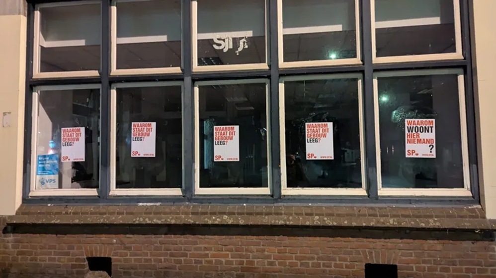

45.800
Inwoners
Kerkrade is een stad met een specifieke combinatie van factoren die de energietransitie voor inwoners extra ingewikkeld en lastig maakt. Op vrijwel elke sociaaleconomische indicator scoort Kerkrade significant lager dan het nationaal gemiddelde.
45.800
Inwoners
90%
Woningen voor 2000
gebouwd
€36.600
Gemiddeld inkomen per
huishouden
47%
Sociale huurwoningen
Bron: Centraal Bureau voor de Statistiek (CBS) 2024. Alle cijfers zijn indicatief en gebaseerd op openbaar beschikbare data. Sommige getallen zijn afgerond.

Door bedrijven die uit Kerkrade weg zijn getrokken, komt leegstand van panden steeds vaker voor
45.800 inwoners
Kerkrade heeft de afgelopen decennia een sterke bevolkingsdaling doorgemaakt. Waar de stad ooit meer dan 70.000 inwoners telde, zorgen vergrijzing, een laag geboortecijfer en vertrek van jongeren voor een blijvende afname. Dit heeft gevolgen voor voorzieningen, woningvraag en de lokale economie.
90% woningen voor 2000 gebouwd
Het merendeel van de woningen in Kerkrade is ouder dan 25 jaar. Veel huizen zijn gebouwd in een tijd waarin energiezuinigheid minder belangrijk was. Hierdoor ligt er een grote opgave voor renovatie, verduurzaming en het verbeteren van wooncomfort en energieprestaties.
€36.600 gemiddeld inkomen per huishouden
Het gemiddelde huishoudinkomen ligt onder het landelijke gemiddelde. Dit kan invloed hebben op de bestedingsruimte van inwoners en de mogelijkheden om te investeren in bijvoorbeeld woningverbetering, verduurzaming of andere maatregelen die bijdragen aan een lagere energierekening.
47% Sociale huurwoningen
Bijna de helft van de woningvoorraad bestaat uit sociale huurwoningen. Daardoor spelen woningcorporaties een belangrijke rol bij onderhoud, verduurzaming en leefbaarheid. Veel bewoners zijn voor energiebesparende maatregelen afhankelijk van investeringen die door verhuurders worden gedaan.